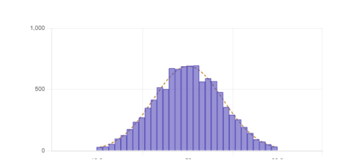
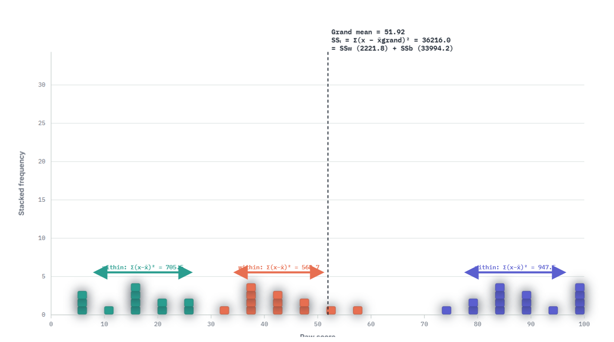
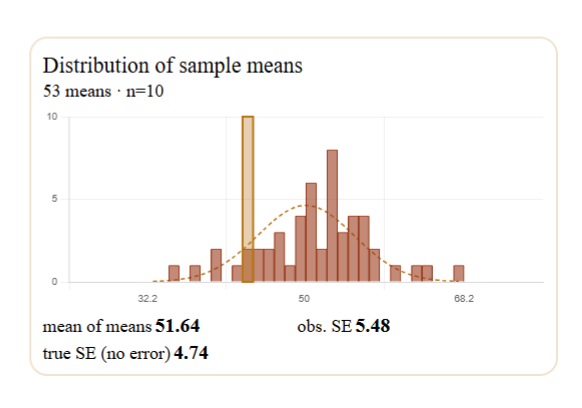
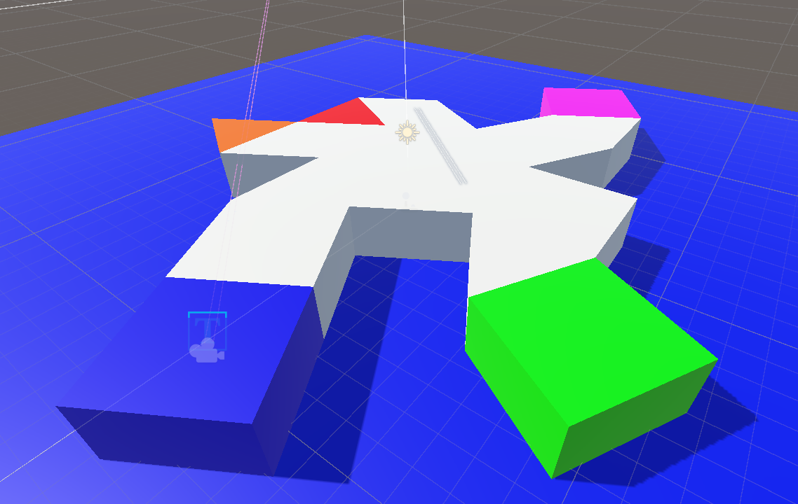

Intro to stats for psychology Useful tools for understanding stats concepts

Explore distributions of sample means and see how sample means become normally distributed as sample size increases.

Visualize between-group and within-group variability and understand the F-ratio. See how an ANOVA table is created with visual references.

See how the distribution of sample means is affected by realistic, imperfect measurement.

Navigation game for collecting data from ourselves to use in class. Test your spatial ability.